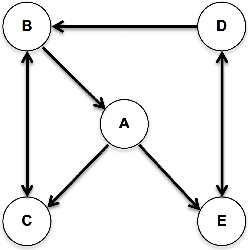
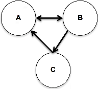
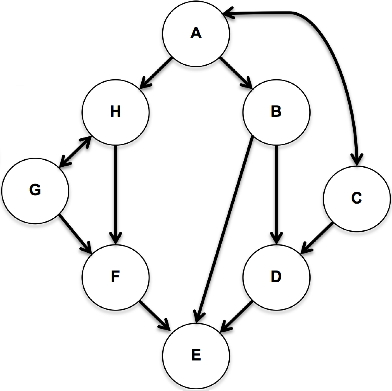

With adjacency maps, spot-checking whether arbitrary vertex A directly connects to vertex B is a simple array lookup. Likewise, to determine vertex A’s neighbors, we take an entire row from our map and extract the subset of cells that indicate edges. Unfortunately, adjacency maps don’t scale well for memory, as the number of vertices grows: O(v2), where v is vertices. Edge lists, however, are O(e), where e is edges. For dense graphs (with high edge-to-vertex ratio), memory usage is comparable, but for sparse graphs (low edge-to-vertex ratio), this difference is significant. An ideal graph representation for sparse graphs would have the faster edge- and neighbor-checking of adjacency maps, with the smaller memory consumption of edge lists. These are characteristics of the Adjacency List.

Like adjacency maps, adjacency lists are two-dimensional arrays. Each row represents the outward connections for a vertex, but only valid edges are stored. An adjacency list for graph above is smaller than an adjacency map, but retains the fast (indexed) lookup: [[C,E],[A,C],[B],[B,E],[D]].
Adjacency List Exercise 1
Create adjacency lists for the following graphs. As earlier, make vertex A [0], make B [1], C [2], etc.
Graph A

Graph B

Graph C
Adjacency List Exercise 2
Draw graphs for these adjacency lists:
[[C,D],[C,D],[B],[A,C]]
[[C,E],[A,D],[B,E],[A,C],[B,D]]
[[A,B],[C],[B,D],[A,E],[]]
[[B,C,H],[D,E],[D,H],[E],[],[E],[B,F],[F,G]]
Chapter 17 – Graphs